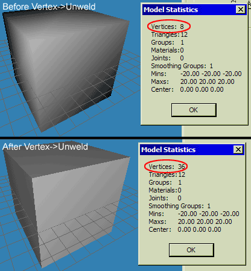

MilkShape 3D FAQ
1. Registration
Why does my copy of MilkShape 3D not work
after I register it?
2. Modeling
Why do some surfaces of my model appear black?
Why are there holes in my model when I export
my model into a game?
Why does my background image not appear when I
use the 'Choose Background Image...' option?
How can I get rid of the background image once
I'm finished with it?
What are the limitations I should consider when
modelling?
Why do I get funny lines when I use the extrude
tool?
My models always look really smoothed over many
surfaces, how can I achieve an angular effect?
3. Skinning
Why do I get an error "Failed to Load
Texture" when I try to load my texture?
What sizes of texture can I use when skinning
my model?
4. Animation
Why are the joints in my model so small or too
big?
When I try to Copy a keyframe then paste it to
another location, why does it not seem to work correctly?
Why, when I paste a keyframe does it not stay there
when I select another frame, or perform another action?
My pasted keyframe does not show the bone positions
as they are in the frame I copied from, why?
5. Misc
Why do I get the error 'Failed to Record AVI'
when I try to record an AVI file from the viewport popup menu?
1. Registration
Why does my copy of MilkShape 3D not
work after I register it?
When you register your copy of MilkShape 3D after the trial period
has run out problems are known to occur. You will generally get
a message asking you to wait for two minutes before starting MilkShape
3D up again once it has been registered. If the application does
not work, which is a very rare case then you should contact Mete
Ciragan, the author and explain the situation. Generally registration
problems are down to mis-typed registration codes or user names,
make sure to copy and paste the username and password that you were
sent directly from the e-mail to the registration box. See the About
form for more details.
Return to top
2. Modeling
Why do some surfaces of my model appear black?
This is usually down to the fact that the face/s in question are
facing the wrong way. Generally you want all faces to face outwards
with an Anti-Clockwise Vertex Order. In order to correct the problem,
select the faces in question and then select menu item Face->Reverse
Vertex Order.
Why are there holes in my model when I export
my model into a game?
The faces where the holes are, are facing inwards, they have a
Clockwise Vertex Order. To correct this go back to MilkShape and
right-click the perspective viewport then select Flat Shaded from
the pop-up menu. All faces that are black should be selected then
the action Face->Reverse Vertex Order should be performed. It
is recommended that before exporting that you perform this procedure
to avoid wasting time exporting models with holes in them.
Why does my background image not appear when I
use the 'Choose Background Image...' option?
In some cases background images have to be of a dimension that
is a power of two and in all cases there is a maximum size of image.
This is completely dependant on the kind of graphics card you have.
Some people find that their image does not display unless it is
of a power of 2. I originally ran MilkShape 3D on a 3dfx Voodoo
3, the maximum image size I could use was 256x256 and it had to
be of a power of 2. Now I use an NVIDIA GeForce 2 Ti and I can use
any size I want (deduced from numerous tests). If it doesn't work
on your machine try to match some of the special cases I have just
talked about, trial and error is your best bet.
How can I get rid of the background image once
I'm finished with it?
This is a simple one, click on the 'Choose Background Image...'
again from the Viewport Popup menu and then click 'Cancel' in the
open box that appears.
What are the limitations I should consider when
modelling?
There are limits to the number of vertices, triangles, groups,
materials, joints and keyframes allowed in MilkShape 3D, it is important
to consider these limitations when modelling.
- Vertices: 8192
- Triangles:
16384
- Groups: 128
- Materials:
128
- Joints: 128
- Keyframes:
256
These are the definitions taken from the MS3D file format 'ms3dspec.txt.c'
from the MS3D SDK. While your model/s may exceed some of these
limitations, the limitations shown here are the limitations under
which you will see predictable behaviour when using MilkShape
3D. It is not known what would happen (in respect to the behaviour
of MilkShape 3D) to models which exceed these limitations.
Why do I get funny lines when I use the extrude
tool?
The extrude tool can be used only on faces. If you get this behaviour
from MilkShape 3D it is because you are trying to perform the extrude
operation on vertices.
My models always look really smoothed over many
surfaces, how can I achieve an angular effect?
This effect can be achieved fairly easily as of MilkShape 3D version
1.6.3 and onwards. Here is an copy of a reply to a post requesting
information on how this is done.
"This functionality was suggested to Mete (by me infact)
to make stuff like this easier.
The way to achieve this angled look is by selecting all the
vertices and using the Vertex->Unweld option. This treats all vertices
as being for ONLY one face, i.e. all faces have three verts and
none are shared. It can increase the vert count but thats not really
a factor here. Once the vertices are not shared they have a normal
that represents the direction that the face is facing in and not
an average of all faces around the same area. If you catch my drift.
Check out the image.

Note that both before and after are displayed in Smooth Shaded."
This is explained further in the Normals section of 3D
Theory & Practice.
Return to top
3. Skinning
Why do I get an error "Failed to Load
Texture" when I try to load my texture?
This can be for a number of reasons. First you must make sure that
the format of texture you are trying to import is supported by MilkShape
3D. Do this by checking in the drop down file type box in the texture
browser box.
What sizes of texture can I use when skinning
my model?
The texture dimensions should always be a power of 2, e.g. 64x64,
128x128, 256x256. The maximum size of texture you can use is dependant
on your graphics card.
Return to top
4. Animation
Why are the joints in my model so small or too
big?
The problem here is that the pre-set joint size that is defined
in the preferences window is too small. Select File->Preferences...
and then click the Misc tab. In the Joint Size box insert a higher
number than is already there, experimenting with this will give
you a good size to work with.
When I try to Copy a keyframe then paste it to
another location, why does it not seem to work correctly?
This is a problem often encountered by beginners (and experts who
forget). The solution is to make sure the joints you want to copy
the position of are selected before Copying the keyframe. The best
way to achieve this is to select the whole skeleton.
Why, when I paste a frame does it not stay there
when I select another frame, or perform another action?
Pasting a keyframe does not mean it has been set as is the mistake
of most people with this problem. When you have your model in the
pose you want for that keyframe always remember to set it by using
the command Animate->Set Keyframe (Ctrl+K).
My pasted keyframe does not show the bone positions
as they are in the frame I copied from, why?
This is most probably down to when you selected the keyframe to
be copied. When copying keyframes use the Select Joint tool and
select every joint that you wish to copy the position of,
then use the Copy Keyframe command. Usually in a biped model this
is all the joints in the model.
Return to top
5. Misc
Why do I get the error 'Failed to Record AVI'
when I try to record an AVI file from the viewport popup menu?
This can be due to a number of things. The first thing you should
try is adding the .avi extension to the end of the filename that
you enter into the filename box in the windows save box that appears.
There are rumoured to
be other factors such as the viewport width and height have to be
an even number, this is not concrete though. As the Record AVI is
new functionality as of version 1.6 onwards problems have still
not been entirely ironed out.
Return to top
|